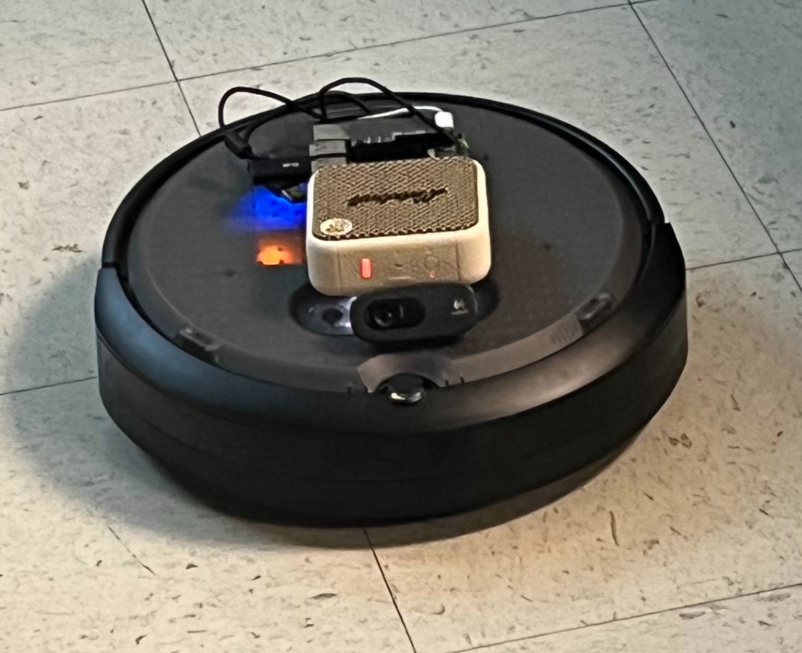
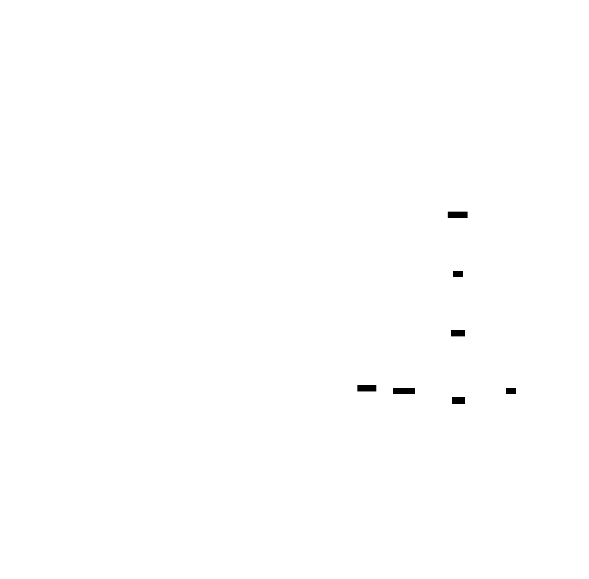
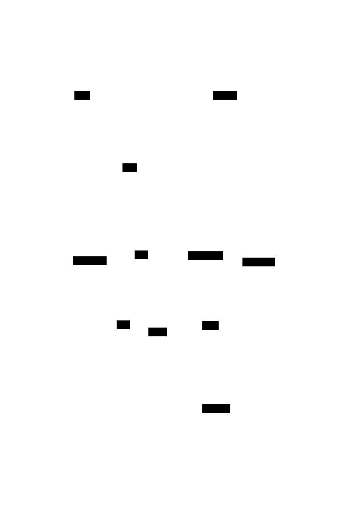
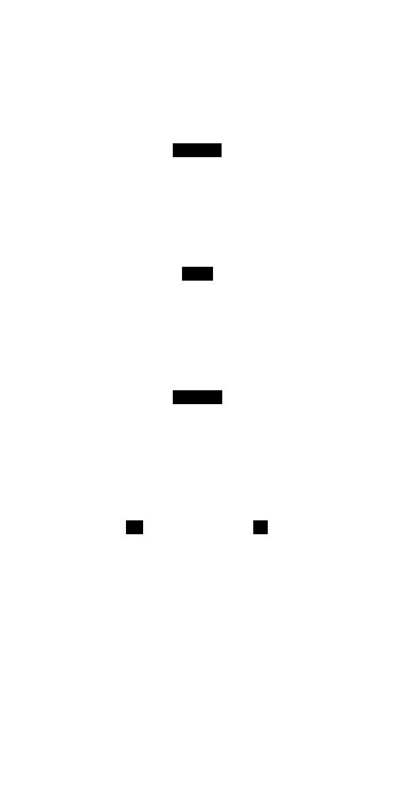
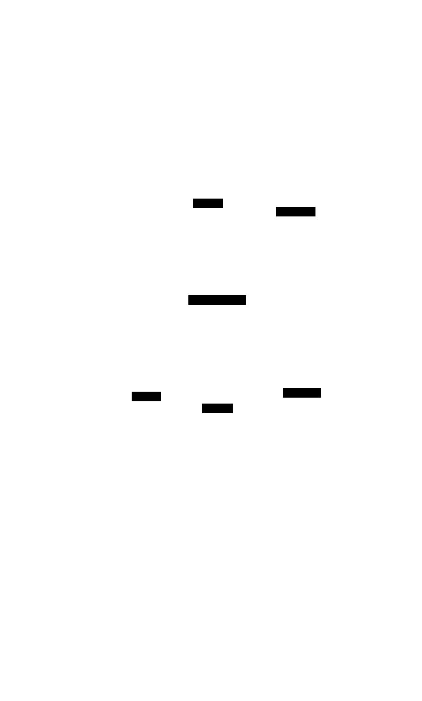
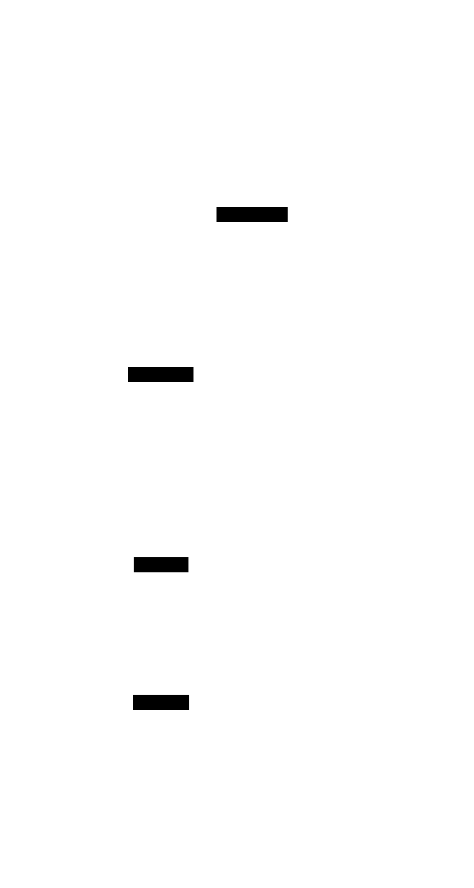

Voice-Controlled Human-Following Robot
"Your voice is the controller — the robot that listens, sees, and follows."
AI-powered Create3 robot on Raspberry Pi 5 with edge inference
Team: Akshay Aralikatti, Himanashu Singh, Nicholas Panaccione
Source CodeDelivery Snapshot
Edge AI: Wake word, ASR, intent parsing run locally. Vision uses Gemini API for scene description.
Control Loop: MediaPipe + ROS 2 Jazzy streaming to Create3 /cmd_vel.
Latency Per Module (ms)
Demo Flow
- Say wake word “computer”.
- Speak command: “follow me” or “describe scene”.
- Pi routes intent → ROS 2 node → Create3 motion.
- Gemini vision replies with voice via
espeak-ng.
Demo Videos
Embedding is restricted on these links. Click “Open on YouTube” to view.
Turn right
Open on YouTubeMove forward
Open on YouTubeFollow me
Open on YouTubeDescribe surroundings
Open on YouTubeChained commands
Open on YouTubeFull project write-up (toggle to collapse/expand)
Date: 2025-12-17
Table of Contents
- Overview
- Features & Objectives
- System Architecture
- Tech Stack
- Hardware Requirements
- Feature Deep Dives
- Wake Word Detection
- Speech Recognition
- Intent Parsing
- Vision & Scene Description
- Human Following
- Robot Control
Overview
This project transforms an iRobot Create3 into an intelligent voice-controlled robot capable of:
- Responding to wake word "computer"
- Understanding natural language commands
- Following humans using computer vision
- Describing its surroundings using AI vision
- Executing movement commands
Robot AI System Overview
Features & Objectives
Goals
| Goal | Description | Status |
|---|---|---|
| Voice Activation | Hands-free wake word detection | Complete |
| Natural Language | Understand conversational commands | Complete |
| Human Following | Autonomously follow a person | Complete |
| Scene Understanding | Describe environment using AI | Complete |
| Movement Control | Execute precise movements | Complete |
| Low Latency | Responsive real-time control | Optimized |
| Edge Deployment | Run entirely on Raspberry Pi 5 | Complete |
Objectives
- Accessibility: Control robot without physical interface
- Intelligence: Understand intent, not just keywords
- Autonomy: Follow humans without manual control
- Awareness: Perceive and describe environment
- Efficiency: Run on resource-constrained hardware
System Architecture
High-Level Architecture

Component Interaction
Component Interaction Map
Tech Stack
| Layer | Technology | Purpose | Model/Version |
|---|---|---|---|
| Wake Word | Picovoice Porcupine | Detect "computer" | Built-in keyword |
| Speech-to-Text | OpenAI Whisper | Transcribe speech | tiny (39M params) |
| Intent Parsing | Google Gemma | Understand commands | gemma-3-1b-it (Local) |
| Vision AI | Google Gemini | Scene description | gemini-2.5-flash (API) |
| Person Detection | MediaPipe Pose | Detect humans | Pose Lite |
| Fallback Detection | OpenCV HOG | Partial body detection | Default SVM |
| Robot Middleware | ROS 2 Jazzy | Robot communication | Jazzy Jalisco |
| Text-to-Speech | espeak-ng | Voice feedback | System TTS |
| OS | Ubuntu 24.04 | Operating system | ARM64 |
Model Comparison
Model Comparison
| Model | Size | Runs On | Latency | Purpose |
|---|---|---|---|---|
| Porcupine | ~2 MB | Local CPU | <10ms | Wake word |
| Whisper tiny | 39 MB | Local CPU | ~2-3s | ASR |
| Gemma 3 1B | ~2 GB | Local CPU | ~1-2s | Intent |
| Gemini Flash | Large | Cloud API | ~2-3s | Vision |
| MediaPipe | ~5 MB | Local CPU | ~50ms | Detection |
Hardware Requirements
Required Components
| Component | Specification | Purpose |
|---|---|---|
| iRobot Create3 | Educational robot | Mobile base |
| Raspberry Pi 5 | 16GB RAM | Compute unit |
| USB Webcam | 720p minimum | Vision input |
| USB Microphone | Any USB mic | Voice input |
| Speaker | Bluetooth or USB | Voice output |
| Power | USB-C for Pi | Power supply |
Connection Diagram
Feature Deep Dives
1. Wake Word Detection (Picovoice Porcupine)
Purpose: Always-on listening for "computer" trigger word without cloud connectivity.
Wake Word Detection Flow
Key Specifications:
- Latency: <10ms detection
- CPU Usage: ~5% (always listening)
- Memory: ~2MB model
- Accuracy: >95% at 1m distance
- False Positive Rate: <1 per 10 hours
Code Implementation (main.py):
import pvporcupine
from pvrecorder import PvRecorder
# Initialize Porcupine wake word engine
porcupine = pvporcupine.create(
access_key=PICOVOICE_ACCESS_KEY,
keywords=["computer"],
)
# Create audio recorder
recorder = PvRecorder(
device_index=device_index,
frame_length=porcupine.frame_length,
)
# Wake word detection loop
recorder.start()
while rclpy.ok():
pcm = recorder.read()
result = porcupine.process(pcm)
if result >= 0:
print("[WAKE] 'Computer' detected!")
break2. Speech Recognition (OpenAI Whisper)
Purpose: Convert spoken commands to text after wake word detection.
Speech Recognition Flow
Key Specifications:
- Model: Whisper tiny (39M parameters)
- Latency: 2-3 seconds for 6s audio
- Accuracy: ~85% WER on conversational speech
- Memory: ~150MB loaded
- Runs: Locally on CPU (no GPU required)
Code Implementation (main.py):
import whisper
class WhisperRecognizer:
"""Record audio with arecord and transcribe with Whisper."""
def __init__(self, model_name: str = "tiny", sample_rate: int = 16000):
self.model_name = model_name
self.sample_rate = sample_rate
print(f"[ASR] Loading Whisper model '{model_name}'...")
self.model = whisper.load_model(model_name)
print("[ASR] Whisper model loaded.")
def listen_and_transcribe(self, max_seconds: float = 6.0) -> str:
"""Record audio and transcribe."""
cmd = [
"arecord", "-D", ARECORD_DEVICE,
"-f", "S16_LE", "-r", str(self.sample_rate),
"-c", "1", "-d", str(int(max_seconds)),
"-t", "wav", str(LAST_COMMAND_WAV),
]
subprocess.run(cmd, check=True, capture_output=True)
result = self.model.transcribe(str(LAST_COMMAND_WAV), fp16=False)
text = (result.get("text") or "").strip()
return text3. Intent Parsing (Google Gemma)
Purpose: Convert natural language text into structured robot commands using local LLM inference.
Intent Parsing Flow
Code Implementation (robot/intent.py):
import google.generativeai as genai
# Gemma model for local intent parsing
GEMMA_MODEL_NAME = os.environ.get("GEMMA_MODEL_NAME", "gemma-3-1b-it")
SYSTEM_INSTRUCTIONS = """
You are an intent parser for a small mobile robot.
Your job is to convert a short spoken command into a JSON object that
describes what the robot should do.
SUPPORTED INTENTS:
1) "movement_sequence"
- User wants the robot to move and/or turn.
- Return:
{
"intent": "movement_sequence",
"actions": [
{"type": "move", "direction": "forward", "distance_m": 1.0},
{"type": "turn", "direction": "left", "degrees": 90}
]
}
2) "follow_me" - User wants robot to follow them
3) "describe_surroundings" - User wants robot to describe what it sees
4) "stop" - User wants robot to stop immediately
5) "shutdown" - User wants to exit program
ALWAYS respond with PURE JSON. Do NOT include explanations.
"""
def parse_intent(text: str) -> Dict[str, Any]:
"""Parse user command into structured intent using Gemma."""
genai.configure(api_key=API_KEY)
model = genai.GenerativeModel(GEMMA_MODEL_NAME)
prompt = SYSTEM_INSTRUCTIONS + "\n\nUser command:\n" + text + "\n\nJSON:"
response = model.generate_content(prompt)
json_str = _extract_json(response.text)
return json.loads(json_str)Fallback Parser: If API fails, keyword-based parsing is used:
def _fallback_keyword_parser(text: str) -> Dict[str, Any]:
"""Simple backup parser if Gemma is unavailable."""
lower = text.lower()
if any(w in lower for w in ["stop", "freeze"]):
return {"intent": "stop", "actions": [], "raw": text}
if any(w in lower for w in ["follow me", "follow", "track me"]):
return {"intent": "follow_me", "actions": [], "raw": text}
if "forward" in lower:
return {
"intent": "movement_sequence",
"actions": [{"type": "move", "direction": "forward", "distance_m": 0.3}],
"raw": text,
}
return {"intent": "unknown", "actions": [], "raw": text}4. Vision & Scene Description (Google Gemini)
Purpose: Capture image and generate natural language description of surroundings.
Vision Description Flow
Code Implementation (robot/vision.py):
import cv2
import google.generativeai as genai
GEMINI_MODEL = os.getenv("GEMINI_VISION_MODEL", "gemini-2.5-flash")
def capture_frame(device_index: int = 0, warmup_frames: int = 5) -> Path:
"""Capture a single frame from camera and save to IMAGE_PATH."""
cap = cv2.VideoCapture(device_index, cv2.CAP_V4L2)
if not cap.isOpened():
cap = cv2.VideoCapture(device_index)
# Warm-up frames so exposure/auto-settings settle
for _ in range(warmup_frames):
cap.read()
ret, frame = cap.read()
cap.release()
cv2.imwrite(str(IMAGE_PATH), frame)
return IMAGE_PATH
def describe_scene_with_gemini(device_index: int = 0) -> str:
"""Capture an image and ask Gemini to describe it."""
genai.configure(api_key=os.getenv("GEMINI_API_KEY"))
prompt = (
"You are a mobile robot with a forward-facing camera. "
"Describe what you see in front of you as if you are talking to a human user. "
"Mention important objects, distances in rough terms (like 'near', 'far', "
"'to your left/right'), and anything that might affect navigation."
)
img_path = capture_frame(device_index=device_index)
with open(img_path, "rb") as f:
img_bytes = f.read()
model = genai.GenerativeModel(GEMINI_MODEL)
response = model.generate_content([
prompt,
{"mime_type": "image/jpeg", "data": img_bytes},
])
return response.text.strip()5. Human Following (MediaPipe + OpenCV)
Purpose: Detect and follow a human using computer vision.
Human Following System
Detection Hybrid Logic:
Detection Hybrid Logic
Code Implementation (follow_hsr/detector.py):
import cv2
import mediapipe as mp
from dataclasses import dataclass
@dataclass
class PersonDetection:
"""Represents a detected person in the frame."""
bbox: Tuple[int, int, int, int] # (x, y, width, height)
center_x: int
center_y: int
area: int
confidence: float
normalized_x: float # X position normalized to [-1, 1]
normalized_area: float # Area normalized relative to frame size
class PersonDetector:
"""
Detects people using MediaPipe + HOG hybrid for robust detection.
"""
def __init__(self, use_mediapipe: bool = True):
# MediaPipe for full body detection
self.mp_pose = mp.solutions.pose
self.pose = self.mp_pose.Pose(
static_image_mode=False,
model_complexity=0, # 0=lite for speed
min_detection_confidence=0.3,
min_tracking_confidence=0.3,
)
# HOG fallback for partial body (legs only)
self.hog = cv2.HOGDescriptor()
self.hog.setSVMDetector(cv2.HOGDescriptor_getDefaultPeopleDetector())
def detect(self, frame: np.ndarray) -> Optional[PersonDetection]:
"""Detect person - MediaPipe first, HOG fallback."""
detection = self._detect_mediapipe(frame)
if detection is None:
detection = self._detect_hog(frame)
return detection
def _detect_mediapipe(self, frame: np.ndarray) -> Optional[PersonDetection]:
"""Detect person using MediaPipe Pose landmarks."""
rgb_frame = cv2.cvtColor(frame, cv2.COLOR_BGR2RGB)
results = self.pose.process(rgb_frame)
if not results.pose_landmarks:
return None
landmarks = results.pose_landmarks.landmark
# Get visible landmark coordinates
x_coords = [lm.x * self.frame_width for lm in landmarks if lm.visibility > 0.2]
y_coords = [lm.y * self.frame_height for lm in landmarks if lm.visibility > 0.2]
if len(x_coords) < 3:
return None
# Calculate bounding box
x_min, x_max = int(min(x_coords)), int(max(x_coords))
y_min, y_max = int(min(y_coords)), int(max(y_coords))
center_x = (x_min + x_max) // 2
normalized_x = (center_x - self.frame_width / 2) / (self.frame_width / 2)
return PersonDetection(...)Code Implementation (follow_hsr/controller.py):
@dataclass
class ControllerConfig:
"""Configuration for the follow controller."""
angular_kp: float = 0.8 # Proportional gain for turning
max_angular_speed: float = 1.0 # rad/s
angular_deadzone: float = 0.1 # Don't turn if person nearly centered
max_linear_speed: float = 0.2 # m/s
class FollowController:
"""Simple proportional controller for following a person."""
def compute(self, detection: PersonDetection, dt: float) -> Tuple[float, float]:
"""Compute velocity commands based on person detection."""
if detection is None:
return (0.0, 0.0)
# Angular velocity - turn toward person
x_error = detection.normalized_x
if abs(x_error) < self.config.angular_deadzone:
angular_vel = 0.0
else:
angular_vel = -self.config.angular_kp * x_error
# Linear velocity - faster when person is far, slower when close
area = detection.normalized_area
if area > 0.4:
linear_vel = self.config.max_linear_speed * 0.3 # Close
elif area > 0.2:
linear_vel = self.config.max_linear_speed * 0.5 # Medium
else:
linear_vel = self.config.max_linear_speed # Far
return (linear_vel, angular_vel)6. Robot Control (ROS 2)
Purpose: Interface with iRobot Create3 hardware via ROS 2 middleware.
ROS 2 Control Architecture
Code Implementation (main.py):
import rclpy
from rclpy.node import Node
from geometry_msgs.msg import Twist
class RobotController(Node):
"""ROS 2 node for controlling Create3."""
def __init__(self):
super().__init__("robot_ai_controller")
self.cmd_pub = self.create_publisher(Twist, "/cmd_vel", 10)
def stop(self):
"""Stop all movement."""
twist = Twist()
self.cmd_pub.publish(twist)
def send_twist(self, linear_x: float, angular_z: float, duration: float):
"""Send velocity for a duration."""
twist = Twist()
twist.linear.x = float(linear_x)
twist.angular.z = float(angular_z)
end_time = time.time() + duration
while time.time() < end_time and rclpy.ok():
self.cmd_pub.publish(twist)
time.sleep(0.05)
self.stop()
def execute_movement(self, actions: List[Dict]):
"""Execute a movement sequence from parsed intent."""
for action in actions:
atype = action.get("type")
if atype == "move":
direction = action.get("direction", "forward")
dist_m = float(action.get("distance_m", 0.3))
duration = abs(dist_m) / MOVE_SPEED_M_S
lin = MOVE_SPEED_M_S if direction == "forward" else -MOVE_SPEED_M_S
self.send_twist(lin, 0.0, duration)
elif atype == "turn":
direction = action.get("direction", "right")
degrees = float(action.get("degrees", 90.0))
angle_rad = math.radians(abs(degrees))
duration = angle_rad / TURN_SPEED_RAD_S
ang = TURN_SPEED_RAD_S if direction == "left" else -TURN_SPEED_RAD_S
self.send_twist(0.0, ang, duration)System Flow
Complete Command Flow
Complete Command Flow
Requirements & Metrics
Functional Requirements
| ID | Requirement | Priority | Status |
|---|---|---|---|
| FR1 | System shall detect wake word "computer" | High | Done |
| FR2 | System shall transcribe speech to text | High | Done |
| FR3 | System shall parse natural language to intents | High | Done |
| FR4 | System shall execute movement commands | High | Done |
| FR5 | System shall follow detected humans | High | Done |
| FR6 | System shall describe surroundings on request | Medium | Done |
| FR7 | System shall provide voice feedback | Medium | Done |
| FR8 | System shall run on Raspberry Pi 5 | High | Done |
Non-Functional Requirements
| ID | Requirement | Target | Actual |
|---|---|---|---|
| NFR1 | Wake word detection latency | <100ms | ~10ms |
| NFR2 | Speech recognition latency | <5s | ~3s |
| NFR3 | Intent parsing latency | <3s | ~1-2s |
| NFR4 | Following frame rate | >5 FPS | ~5 FPS |
| NFR5 | CPU usage (following) | <50% | ~30% |
| NFR6 | Memory usage | <2GB | ~1.5GB |
| NFR7 | Wake word accuracy | >90% | ~95% |
Performance Metrics
Latency Breakdown (Voice Command)
| Wake Word |
|
~10 ms |
| Audio Rec |
|
6000 ms |
| Whisper |
|
2500 ms |
| Gemma |
|
1500 ms |
Total Worst Case: ~10.2s
Following Performance
| Total Latency per Frame | ~120 ms |
| Actual Frame Rate | ~5 FPS |
Performance Analysis
Error Analysis
| Component | Error Type | Rate | Mitigation |
|---|---|---|---|
| Wake Word | False positive | <0.1/hr | High threshold |
| Wake Word | False negative | ~5% | Retry prompt |
| Whisper | Transcription error | ~15% WER | Keyword fallback |
| Gemma | Intent misparse | ~10% | Fallback parser |
| MediaPipe | Detection miss | ~20% close range | HOG fallback |
| HOG | False positive | ~5% | Area filtering |
Repeatability
| Action | Repeatability | Notes |
|---|---|---|
| Wake word detection | 95% | Consistent in quiet environments |
| "Move forward 1m" | +/-10cm | Depends on floor surface |
| "Turn left 90deg" | +/-5deg | Calibrated timing-based |
| Person following | 80% tracking | Loses track at edges |
Timing Analysis
Efficiency Optimizations
| Optimization | Impact | Implementation |
|---|---|---|
| Low resolution (320x240) | -75% pixels | Camera settings |
| Frame skipping (every 2nd) | -50% detection calls | Counter in loop |
| Whisper tiny model | -90% vs base | Model selection |
| Min sleep (50ms) | CPU breathing room | Sleep in loop |
| HOG fallback | Better close-range | Hybrid detection |
Installation
Prerequisites
# Ubuntu 24.04 on Raspberry Pi 5
# ROS 2 Jazzy installed
# System dependencies
sudo apt update
sudo apt install -y python3-pip python3-venv \
alsa-utils espeak-ng portaudio19-devSetup
# Clone repository
git clone https://github.com/himanshusr/voice_follow_create3.git robot_ai
cd robot_ai
# Create virtual environment
python3 -m venv .venv
source .venv/bin/activate
# Install dependencies
pip install -r requirements.txt
# Set environment variables
export GEMINI_API_KEY="your-gemini-key"
export PICOVOICE_ACCESS_KEY="your-picovoice-key"Get API Keys
| Service | URL | Free Tier |
|---|---|---|
| Gemini | https://aistudio.google.com/app/apikey | Yes |
| Picovoice | https://console.picovoice.ai/ | Yes (limited) |
Usage
Quick Start
cd ~/robot_ai
source /opt/ros/jazzy/setup.bash
source .venv/bin/activate
export GEMINI_API_KEY="your-key"
export PICOVOICE_ACCESS_KEY="your-key"
python main.pyVoice Commands
| Say This | Robot Does |
|---|---|
| "Computer" | Wakes up, says "Yes?" |
| "Follow me" | Starts following you |
| "Stop" | Stops all movement |
| "Go forward one meter" | Moves forward 1m |
| "Turn left ninety degrees" | Turns left 90 degrees |
| "What do you see?" | Describes surroundings |
| "Shut down" | Exits program |
Troubleshooting
Common Issues
| Issue | Cause | Solution |
|---|---|---|
| "computer" not detected | Mic not working | Check arecord -l |
| Robot doesn't move | Create3 not connected | Check ros2 topic list |
| High CPU / crashes | Too intensive | Use --no-video flag |
| No speech output | Speaker not set | Check aplay -l or pactl list sinks |
| Intent parsing fails | No API key | Set GEMINI_API_KEY |
Debug Commands
# Check microphone
arecord -d 3 test.wav && aplay test.wav
# Check camera
python -c "import cv2; print(cv2.VideoCapture(0).isOpened())"
# Check ROS connection
ros2 topic list | grep cmd_vel
# Check Create3 battery
ros2 topic echo /battery_state --once | grep percentage
# Check Bluetooth speaker
pactl list sinks shortConclusion & Future Work
This lab successfully demonstrated a fully integrated Voice-Controlled AI Robot using the Raspberry Pi 5 and iRobot Create3. By combining on-device wake word detection (Porcupine), speech recognition (Whisper), and local LLM intent parsing (Gemma), we achieved a privacy-focused and responsive control system. The addition of cloud-based Vision (Gemini) added multimodal capabilities, allowing the robot to understand and describe its environment.
Key achievements include:
- Low Latency Control: ~1.5s latency for movement commands.
- Robust Following: Hybrid MediaPipe + HOG tracking for reliable human following.
- Natural Interaction: Conversational interface rather than rigid keyword matching.
Future Improvements
- SLAM Integration: Adding Nav2 for map-based navigation ("Go to the kitchen").
- Faster Vision: optimizing the vision pipeline or using a local vision model (e.g., PaliGemma).
- Speaker Diarization: Distinguishing between multiple users.
License
MIT License - See LICENSE file for details.
Contributors
- Human-Following Module: MediaPipe + OpenCV hybrid detection
- Voice Control: Picovoice + Whisper + Gemma integration
- Robot Interface: ROS 2 Jazzy on iRobot Create3